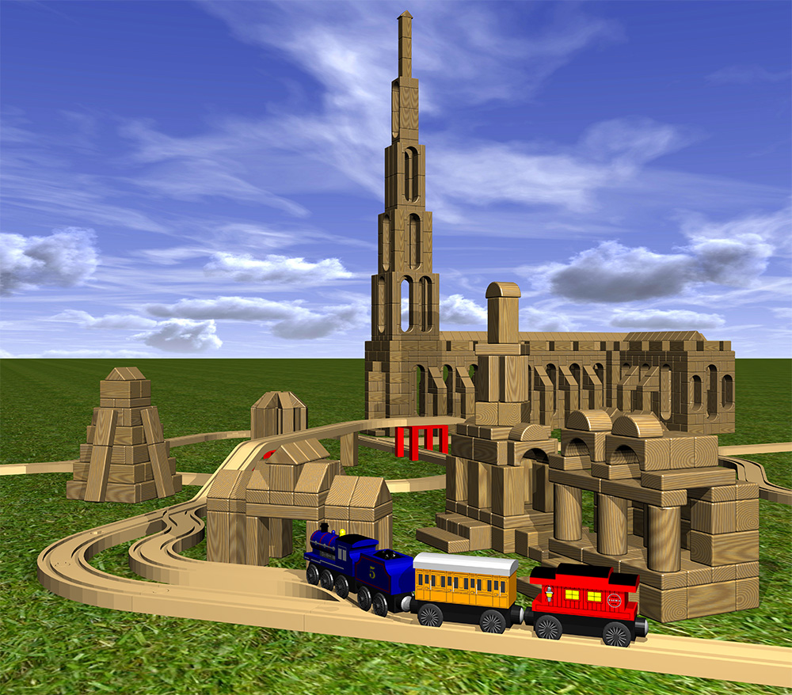

Trains (2009)
This scene was designed and rendered with Blender. The blocks and trains were modeled after my 2-year-old son's favorite toys, which we enjoyed for many many hours together. The train textures were desiged in Microsoft Visio. The sky background image comes from M@dcow, and the grass image for the ground comes from Sketchuptut.com. Finally, the beautiful wood texture came from a tutorial that I have unfortunately lost. If you recognize it, please let me know!
This was my second big project using Blender. Since then, I've learned some important tricks, such as how to get flat and smooth surfaces on the same object. This project also helped me to learn the even more important KISS principle (Keep It Simple, Stupid!), which is a must for every aspiring artist.
© W. Rhett Davis 2009, 2015